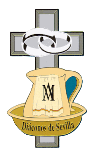

Noticias de la IglesiaComunidad Diaconal- Sevilla -
Titulares ordenados cronológicamente, con enlace a la fuente original.
No se reproduce el contenido de las noticias.
Próximos actos
¿Quieres recibirlos todos en tu móvil? Suscríbete al calendario de actos (una sola vez; se actualiza solo).
- 16 de octubre de 2026 Eucaristía fiesta patronal de los médicos Agenda — Archidiócesis de Sevilla Añadir a mi agenda: 📅 iPhone 📅 Android / Google
- 18 de octubre de 2026 DOMUND 2026 Agenda — Archidiócesis de Sevilla Añadir a mi agenda: 📅 iPhone 📅 Android / Google
- 21 de octubre de 2026 CLERO | Hermandad San Pedro Ad Vincula Agenda — Archidiócesis de Sevilla Añadir a mi agenda: 📅 iPhone 📅 Android / Google
- 22 de octubre de 2026 Reunión de obispos de la Provincia Eclesiástica de Sevilla Agenda — Archidiócesis de Sevilla Añadir a mi agenda: 📅 iPhone 📅 Android / Google
- 22 de octubre de 2026 Eucaristía fiesta patronal San Juan Pablo II Agenda — Archidiócesis de Sevilla Añadir a mi agenda: 📅 iPhone 📅 Android / Google
- 24 de octubre de 2026 Medalla de Oro de la Villa de Paradas a la Hdad. del Santo Entierro Agenda — Archidiócesis de Sevilla Añadir a mi agenda: 📅 iPhone 📅 Android / Google
- 27 de octubre de 2026 Bendición Casa de Hermanos sin Hogar Agenda — Archidiócesis de Sevilla Añadir a mi agenda: 📅 iPhone 📅 Android / Google
- 29 de octubre de 2026 Conferencia del Cardenal Bettori Agenda — Archidiócesis de Sevilla Añadir a mi agenda: 📅 iPhone 📅 Android / Google
- 02 de noviembre de 2026 Misa en el Cementerio de San Fernando, Sevilla Agenda — Archidiócesis de Sevilla Añadir a mi agenda: 📅 iPhone 📅 Android / Google
- 05 de noviembre de 2026 Consejo de Presbiterio Agenda — Archidiócesis de Sevilla Añadir a mi agenda: 📅 iPhone 📅 Android / Google
- 08 de noviembre de 2026 Coronación canónica de Ntra. Sra. del Amparo Agenda — Archidiócesis de Sevilla Añadir a mi agenda: 📅 iPhone 📅 Android / Google
- 08 de noviembre de 2026 CLERO | Ejercicios Espirituales Agenda — Archidiócesis de Sevilla Añadir a mi agenda: 📅 iPhone 📅 Android / Google
- 09 de noviembre de 2026 CLERO | Encuentro de sacerdotes del Quinquenio Agenda — Archidiócesis de Sevilla Añadir a mi agenda: 📅 iPhone 📅 Android / Google
- 11 de noviembre de 2026 CLERO | Consejo de arciprestes Agenda — Archidiócesis de Sevilla Añadir a mi agenda: 📅 iPhone 📅 Android / Google
- 11 de noviembre de 2026 CLERO | Misa sacerdotes difuntos Agenda — Archidiócesis de Sevilla Añadir a mi agenda: 📅 iPhone 📅 Android / Google
- 13 de noviembre de 2026 Encuentro de Seminarios de Andalucía y Murcia Agenda — Archidiócesis de Sevilla Añadir a mi agenda: 📅 iPhone 📅 Android / Google
- 18 de noviembre de 2026 CLERO | Hermandad San Pedro Ad Vincula Agenda — Archidiócesis de Sevilla Añadir a mi agenda: 📅 iPhone 📅 Android / Google
- 03 de diciembre de 2026 CLERO | Retiro de adviento Agenda — Archidiócesis de Sevilla Añadir a mi agenda: 📅 iPhone 📅 Android / Google
- 12 de diciembre de 2026 Eucaristía en las Bodas de Plata de ordenación episcopal de Mons. José Ángel Saiz Meneses, Arzobispo de Sevilla Delegación para el Clero Añadir a mi agenda: 📅 iPhone 📅 Android / Google
- 16 de diciembre de 2026 CLERO | Hermandad San Pedro Ad Vincula Agenda — Archidiócesis de Sevilla Añadir a mi agenda: 📅 iPhone 📅 Android / Google
- 24 de diciembre de 2026 Felicitación de Navidad del clero al Sr. Arzobispo Delegación para el Clero Añadir a mi agenda: 📅 iPhone 📅 Android / Google
- 26 de diciembre de 2026 Misa de San Esteban con el Colegio Diaconal Delegación para el Clero Añadir a mi agenda: 📅 iPhone 📅 Android / Google
- 07 de enero de 2027 Encuentro con hermanos mayores de las Hdades. colaboradoras del Seminario Agenda — Archidiócesis de Sevilla Añadir a mi agenda: 📅 iPhone 📅 Android / Google
- 13 de enero de 2027 CLERO | Hermandad San Pedro Ad Vincula Agenda — Archidiócesis de Sevilla Añadir a mi agenda: 📅 iPhone 📅 Android / Google
- 14 de febrero de 2027 CLERO | Ejercicios Espirituales Agenda — Archidiócesis de Sevilla Añadir a mi agenda: 📅 iPhone 📅 Android / Google
- 18 de febrero de 2027 Retiro de Cuaresma del clero (dirige D. Teodoro, Obispo Auxiliar) Delegación para el Clero Añadir a mi agenda: 📅 iPhone 📅 Android / Google
- 24 de febrero de 2027 CLERO | Hermandad San Pedro Ad Vincula Agenda — Archidiócesis de Sevilla Añadir a mi agenda: 📅 iPhone 📅 Android / Google
- 05 de marzo de 2027 Campaña vocacional en las parroquias de pueblos Agenda — Archidiócesis de Sevilla Añadir a mi agenda: 📅 iPhone 📅 Android / Google
- 07 de marzo de 2027 Institución de ministerios de los seminaristas Agenda — Archidiócesis de Sevilla Añadir a mi agenda: 📅 iPhone 📅 Android / Google
- 23 de marzo de 2027 Misa Crismal Delegación para el Clero Añadir a mi agenda: 📅 iPhone 📅 Android / Google
- 06 de mayo de 2027 Celebración de San Juan de Ávila (Bodas de Oro y de Plata sacerdotales) Delegación para el Clero Añadir a mi agenda: 📅 iPhone 📅 Android / Google
- 20 de mayo de 2027 Retiro de Jesucristo Sumo y Eterno Sacerdote Delegación para el Clero Añadir a mi agenda: 📅 iPhone 📅 Android / Google
- 27 de mayo de 2027 Solemnidad del Corpus Christi Delegación para el Clero Añadir a mi agenda: 📅 iPhone 📅 Android / Google
Últimas noticias
- 16 de octubre de 2026 Lecturas del XXIX Domingo del Tiempo Ordinario (ciclo A) Archidiócesis de Sevilla
- 16 de octubre de 2026 DOMUND, “trabajar por el anuncio del Evangelio” ODISUR
- 16 de octubre de 2026 DOMUND 2026 | Sevilla, una Iglesia con alma misionera Archidiócesis de Sevilla
- 16 de octubre de 2026 ARCHISEVILLA 7 días. Edición del 16-10-2026 Archidiócesis de Sevilla
- 16 de octubre de 2026 El DOMUND y “El reloj de la vida”, en “El Espejo” en COPE Granada ODISUR
- 16 de octubre de 2026 El arzobispo de Sevilla insta a los seminaristas a ser “testigos de Cristo” Archidiócesis de Sevilla
- 16 de octubre de 2026 D. Francisco Arturo Fabero toma posesión como nuevo párroco de Zahara de la Sierra ODISUR
- 16 de octubre de 2026 Vigilia de oración y Eucaristía, para invitarnos a orar por las vocaciones ODISUR
- 16 de octubre de 2026 D. José Arjona presenta nuevos materiales catequéticos para profundizar en el conocimiento de la Biblia y la educación en la fe ODISUR
- 16 de octubre de 2026 La inteligencia artificial, a examen en Cádiz: expertos analizan sus límites a la luz de la encíclica del Papa León XIV ODISUR
- 16 de octubre de 2026 Comienza el segundo curso de formación teológico-pastoral para catequistas ODISUR
- 16 de octubre de 2026 La Orden de Malta celebrará una Eucaristía en Córdoba por las personas sin hogar ODISUR
- 16 de octubre de 2026 100 años después ODISUR
- 16 de octubre de 2026 El DOMUND en COPE Sevilla este fin de semana Archidiócesis de Sevilla
- 16 de octubre de 2026 La comunicación digital de la Catedral de Sevilla, reconocida en los Premios Digitales de Sevilla 2026 Catedral de Sevilla
- 16 de octubre de 2026 La diócesis invita a compartir y fortalecer el camino del primer anuncio ODISUR
- 16 de octubre de 2026 Los sacerdotes Fernando Murga y Andrés Martínez, nuevos obispos auxiliares de Madrid Conferencia Episcopal Española
- 16 de octubre de 2026 Las visitas de acompañamiento continúan en Ciudad Alta/San Lorenzo y el noroeste de Gran Canaria ODISUR
- 16 de octubre de 2026 Los Talleres de Oración y Vida invitan a hacer una pausa y encontrarse con Dios ODISUR
- 16 de octubre de 2026 Día Mundial de la Alimentación – 16 de octubre. Manos Unidas reclama que el derecho a la alimentación sea una prioridad para construir la paz ODISUR
- 16 de octubre de 2026 Camino de la JMJ Seúl 2027 ODISUR
- 16 de octubre de 2026 Carta pastoral con motivo del Domund 2026 ODISUR
- 16 de octubre de 2026 Adeje acogerá unas jornadas culturales con motivo del 400 aniversario del nacimiento del Santo Hermano Pedro ODISUR
- 16 de octubre de 2026 El Obispo de Jaén inicia la Visita Pastoral al Arciprestazgo de Mágina ODISUR
- 16 de octubre de 2026 Las guardianas de la tierra. Jornada Internacional de las Mujeres Rurales ODISUR
- 16 de octubre de 2026 El DOMUND cumple 100 años llevando a Cristo a todos los rincones del mundo ODISUR
- 16 de octubre de 2026 Cáritas Jaén celebrará, la próxima semana, con diversos actos la campaña «Nadie sin Hogar» ODISUR
- 16 de octubre de 2026 Mayores de Vida Ascendente de Jaén participan en unas jornadas de formación en Málaga ODISUR
- 16 de octubre de 2026 45 jóvenes aprenden a mirar de otra manera en el IV retiro de Bartimeo ODISUR
- 16 de octubre de 2026 La Diócesis de Jaén organiza una formación para avanzar hacia una Catequesis inclusiva ODISUR
- 16 de octubre de 2026 La Casa Sacerdotal Obispo Manuel Basulto: 31 años cuidando a quienes han dedicado su vida a la Iglesia de Jaén ODISUR
- 16 de octubre de 2026 Carchelejo proclama a la Virgen del Rosario Alcaldesa Perpetua de la localidad ODISUR
- 16 de octubre de 2026 Misa de inicio de curso de los Grupos de Vida de Jaén ODISUR
- 16 de octubre de 2026 La parroquia Jesús de Nazaret inaugura el curso con una charla sobre “la cultura del cuidado” del papa Francisco Archidiócesis de Sevilla
- 16 de octubre de 2026 Vigilias Misioneras con motivo del DOMUND ODISUR
- 16 de octubre de 2026 ‘Uno en Cristo, unidos en la misión’ Archidiócesis de Sevilla
- 16 de octubre de 2026 Casarabonela acogerá la llegada y veneración de la sagrada reliquia del beato Padre Arnaiz ODISUR
- 16 de octubre de 2026 Cáritas recuerda que el derecho a la alimentación sigue siendo una deuda pendiente para muchas personas ODISUR
- 15 de octubre de 2026 Los Centros de Estudios Diocesanos inauguran el curso 2026-2027 con 25 seminaristas y una amplia oferta formativa ODISUR
- 15 de octubre de 2026 DOMUND: unidos en la misión ODISUR
- 15 de octubre de 2026 Rafael y Toni: sesenta años de fidelidad del Señor ODISUR
- 15 de octubre de 2026 La Asociación Andaluza de Barrios Ignorados reclama respuestas efectivas contra la pobreza en Córdoba ODISUR
- 15 de octubre de 2026 Pastoral Juvenil de Asidonia-Jerez abre la preinscripción para la JMJ 2027 y organiza una Peregrinación Mariana a El Bosque ODISUR
- 15 de octubre de 2026 “Volver al primer amor”, una llamada a renovar la alegría del ministerio sacerdotal Archidiócesis de Sevilla
- 15 de octubre de 2026 El P. Geoffrey Benjamin Kabombo toma posesión como nuevo párroco de San Pablo de Jerez ODISUR
- 15 de octubre de 2026 Madre Petra, protagonista de una serie ODISUR
- 15 de octubre de 2026 Granada, en la reunión de delegados andaluces sobre Patrimonio de la Iglesia ODISUR
- 15 de octubre de 2026 El Consejo Presbiteral de Asidonia-Jerez celebra su primer encuentro del curso pastoral 2026-2027 ODISUR
- 15 de octubre de 2026 Córdoba acogerá el III Salón del Emprendimiento Cofrade ODISUR
- 15 de octubre de 2026 El misionero Rafael Bardón, en El Espejo de la Iglesia ODISUR
- 15 de octubre de 2026 Monseñor Saiz recibirá el homenaje de la Coordinadora de Entidades Andaluzas de Tarrasa Archidiócesis de Sevilla
- 15 de octubre de 2026 SANTA TERESA DE JESÚS: EJEMPLO DE FE Y PATRIMONIO DE LA CATEDRAL Catedral de Sevilla
- 15 de octubre de 2026 Asidonia-Jerez pone la mirada en la discapacidad y el acompañamiento en la catequesis ODISUR
- 15 de octubre de 2026 La Delegación Diocesana para el Patrimonio participa en Córdoba en una reunión de responsables de patrimonio de las diócesis andaluzas ODISUR
- 15 de octubre de 2026 El profesorado de Religión Católica renueva su compromiso eclesial en Algeciras y su vocación educadora en Fátima ODISUR
- 15 de octubre de 2026 Triduo a santa Ángela de la Cruz ODISUR
- 15 de octubre de 2026 Mons. Valdivia preside en Córdoba el encuentro de delegados de Patrimonio de las diócesis del Sur de España ODISUR
- 15 de octubre de 2026 El CESET ofrece un curso para profundizar en el ecumenismo y la liturgia ODISUR
- 15 de octubre de 2026 Punta Umbría acoge una vigilia por el Domund en el centenario de esta jornada misionera ODISUR
- 15 de octubre de 2026 Docentes de Religión descubren la riqueza de la Catedral de Córdoba ODISUR
- 15 de octubre de 2026 Vida Ascendente inicia el curso con una Eucaristía en Santa Rosa de Lima ODISUR
- 15 de octubre de 2026 Sevilla vivirá este fin de semana en clave misionera con la celebración del DOMUND Archidiócesis de Sevilla
- 15 de octubre de 2026 Evangelio del XXIX Domingo de Tiempo Ordinario (ciclo A) en Lengua de Signos Española Archidiócesis de Sevilla
- 15 de octubre de 2026 Jueves, 15 de octubre de 2026 ODISUR
- 15 de octubre de 2026 CUANDO REPARAR NO BASTA, por Jesús Martín Gómez ODISUR
- 15 de octubre de 2026 ‘El poder de saber gobernarse a uno mismo’ | Tribuna en ABC Sevilla (14-10-2026) Archidiócesis de Sevilla
- 15 de octubre de 2026 La Hermandad y la Parroquia de las Angustias abren nuevos canales de donación para la restauración de la Basílica ODISUR
- 15 de octubre de 2026 Mons. Valdivia preside el encuentro de delegados de Patrimonio de las diócesis del Sur de España Archidiócesis de Sevilla
- 14 de octubre de 2026 Fallece el sacerdote almeriense Ángel Becerra Gómez ODISUR